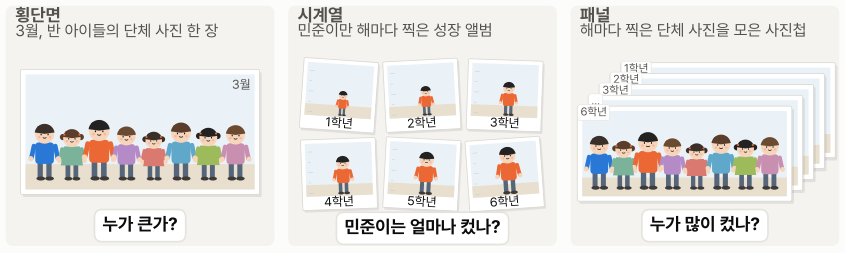
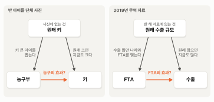

2. 단체 사진과 사진첩 — 횡단면과 패널#
이 장 첫머리의 보고서는 요약의 첫 줄에 이렇게 적었습니다.
2019년 한 해의 나라들을 비교하면, 상대국 GDP와 거리 변수가 같을 때 한국과 FTA를 맺은 나라로의 수출이 75% 많다.
이 숫자는 보고서의 추정 결과 표 맨 왼쪽 열, “횡단면 (2019년)”에서 나왔습니다. 종속변수가 로그 수출이니, 다중회귀분석 장에서 본 더미 계수를 읽는 법대로 FTA의 계수 0.562는 \(e^{0.562}\) ≈ 1.75배, 즉 FTA를 맺은 나라로의 수출이 75% 많다는 뜻입니다. 다른 조건(상대국 GDP, 거리)이 같을 때의 차이입니다. 그런데 보고서는 둘째 줄에서 같은 효과를 이번에는 13%라고 말합니다. 어느 쪽을 믿어야 할까요?
미리 답부터 말하면, 75% 가운데 일부는 FTA 덕분이 아니라, FTA를 맺은 나라들이 원래부터 한국의 수출이 많던 나라였기 때문입니다. 2019년 한 해의 자료로는 FTA를 맺은 나라와 맺지 않은 나라, 즉 서로 다른 나라를 비교할 수밖에 없습니다. 회귀식이 GDP와 거리는 같게 맞췄지만, 그 밖에 맞추지 못한 차이(예를 들어 FTA와 상관없이 원래 한국의 수출이 얼마나 많던 나라였나)는 그대로 남아 75%를 부풀립니다. 여러 해의 자료가 있으면 사정이 달라집니다. FTA를 맺기 전의 모습을 보면 나라마다 원래 어땠는지가 드러나고, 그 몫을 떼어 낸 뒤 FTA 전과 후에 달라진 것만 볼 수 있습니다. 그 답이 보고서의 13%이고, 다음 절의 주제입니다. 이 절에서는 먼저 횡단면 자료와 패널 데이터가 무엇이 다른지 보고, 한 해만 보는 비교가 왜 엉뚱한 답을 낼 수 있는지, 그리고 여러 해의 자료를 그냥 쌓는 것만으로는 왜 여전히 풀리지 않는지 확인합니다.
반 아이들의 키 — 횡단면, 시계열, 패널#
앞 절에서 횡단면 자료는 사진 한 장, 패널 데이터는 해마다 찍은 사진을 모은 사진첩이라고 했습니다. 이 비유를 조금 더 구체적으로 만들어 봅시다. 초등학교 한 반의 아이들 키를 측정한다고 합시다.
3월에 한 번, 반 아이들 30명의 키를 모두 측정했습니다. 여러 대상을 한 시점에 관측했으니 횡단면 자료입니다. 사진으로 치면 반 아이들을 한자리에 세워 찍은 단체 사진 한 장입니다. 이번에는 한 아이, 민준이의 키를 1학년부터 6학년까지 해마다 측정했습니다. 한 대상을 여러 시점에 관측한 이 자료는 시계열(time series) 자료입니다. 사진첩이 아니라, 한 아이만 해마다 찍은 성장 앨범이죠. 마지막으로, 반 아이들 30명의 키를 1학년부터 6학년까지 해마다 측정했습니다. 여러 대상을 여러 시점에 걸쳐 반복해 관측했으니 패널 데이터입니다. 해마다 찍은 단체 사진을 모은 바로 그 사진첩입니다.
세 자료는 답할 수 있는 질문이 다릅니다. 단체 사진 한 장으로는 “누가 큰가”를 알 수 있습니다. 하지만 사진첩이 있으면 “누가 큰가”뿐만 아니라 “누가 많이 컸나”도 알 수 있습니다. 이 두 질문의 구별이 이 장 전체의 열쇠입니다.

그림 2-1. 횡단면, 시계열, 패널. 왼쪽: 3월에 찍은 반 아이들의 단체 사진 한 장. 가운데: 민준이(주황 셔츠)만 해마다 찍은 성장 앨범. 오른쪽: 해마다 찍은 단체 사진을 모은 사진첩.
나라의 사진첩 — 이 장의 자료#
이 장의 자료는 나라를 대상으로 한 사진첩입니다. 한국의 수출 상대국 206개국을 1995년부터 2020년까지 해마다 관측했습니다. 표 2-1은 자료의 일부입니다.
표 2-1. 패널 데이터의 생김새 (수출과 GDP는 십억 달러)
상대국 |
연도 |
수출 |
상대국 GDP |
거리 (km) |
FTA |
|---|---|---|---|---|---|
⋮ |
⋮ |
⋮ |
⋮ |
⋮ |
⋮ |
브라질 |
2002 |
1.25 |
504 |
17,809 |
0 |
브라질 |
2003 |
1.14 |
552 |
17,809 |
0 |
브라질 |
2004 |
1.78 |
664 |
17,809 |
0 |
브라질 |
2005 |
2.41 |
882 |
17,797 |
0 |
⋮ |
⋮ |
⋮ |
⋮ |
⋮ |
⋮ |
칠레 |
2002 |
0.45 |
71 |
18,276 |
0 |
칠레 |
2003 |
0.52 |
78 |
18,276 |
0 |
칠레 |
2004 |
0.71 |
101 |
18,276 |
1 |
칠레 |
2005 |
1.15 |
124 |
18,275 |
1 |
⋮ |
⋮ |
⋮ |
⋮ |
⋮ |
⋮ |
표에서 보듯이 각각의 행은 “어느 나라의 어느 해”입니다. 같은 나라가 해마다 한 행씩 여러 번 나옵니다. 칠레는 2004년에 한국과 FTA를 맺어, FTA 변수가 그해부터 1로 바뀝니다. 반면 양국 간 거리는 해가 바뀌어도 거의 그대로입니다. 인구로 가중해 평균한 거리라서 해마다 아주 조금 움직이지만, 사실상 나라마다 정해진 값입니다.
패널 데이터에서는 변수에 붙는 꼬리표가 둘입니다. 어느 나라인지와 어느 해인지입니다. 교과서에서는 흔히 나라를 \(i\), 해를 \(t\)로 적어, \(\text{수출}_{it}\)처럼 씁니다.
농구를 하면 키가 클까 — 단체 사진의 함정#
이제 한 해만 보는 비교, 즉 횡단면 비교에 어떤 함정이 있는지 봅시다. 반 아이들 가운데 몇 명은 농구부에서 활동합니다. 3월의 단체 사진을 보니, 농구부 아이들이 다른 아이들보다 평균 10cm 큽니다. 농구를 하면 키가 크는 걸까요?
그렇게 단정하기 어렵습니다. 농구부는 키 큰 아이를 뽑기 때문입니다. 농구부 아이들은 농구를 시작하기 전부터 다른 아이들보다 컸을 가능성이 큽니다. 이렇게 농구와 상관없이 아이가 원래 얼마나 컸나를 원래 키라고 부르겠습니다. 그러니 평균 키 차이 10cm 가운데 일부는 농구 덕분이 아니라, 원래 키가 큰 아이들이기 때문입니다. 그런데 3월의 단체 사진에는 아이들이 농구부에 들어가기 전에 얼마나 컸는지가 나와 있지 않습니다. 그래서 단체 사진 한 장만으로는 농구부 아이들이 큰 것이 농구 덕분인지, 원래 커서인지 가려낼 수 없습니다.
이 사진으로 회귀분석을 하면, 농구부 아이들이 원래 컸던 몫까지 농구 덕분인 것처럼 계산되어 농구의 효과를 부풀립니다. 이렇게 효과가 아닌 것이 숫자를 부풀리거나 줄여서, 숫자가 한쪽으로 치우쳐 나오는 것을 통계학에서는 편향(bias)이라고 부릅니다. 다중회귀분석 장에서 본 누락 변수 편향이 바로 이것입니다. 회귀식에 들어 있지 않은 것(원래 키)의 몫이, 회귀식에 들어 있는 것(농구부 활동)의 숫자를 부풀린 것이죠.
이 장의 무역 자료에서도 같은 일이 일어납니다. 보고서의 그림 왼쪽 패널을 다시 봅시다. 한국의 첫 FTA보다 4년 앞선 2000년 기준으로 한국의 중위 수출액을 보면, 나중에 FTA를 맺은 나라는 3억 9,800만 달러, 2020년까지 맺지 않은 나라는 1,100만 달러로 36배였습니다. 나중에 FTA를 맺은 나라들은 FTA를 맺기 전부터 한국의 큰 교역 상대였던 것이죠. 이렇게 FTA와 상관없이 한국이 그 나라에 원래 얼마나 수출하던 나라였나를 원래 수출 규모라고 부르겠습니다. 농구부 이야기의 원래 키에 해당합니다. 그렇다면 농구부 아이들이 원래 컸던 몫까지 농구 덕분인 것처럼 계산되듯이, 보고서에 나온 FTA 효과 75%에도 원래 수출 규모의 차이가 섞여 있는 것이 아닐까요?
간단한 방법으로 이것을 확인해 보죠. 보고서와 동일한 회귀식을 FTA가 하나도 없던 해의 자료에 그대로 적용해 보는 것입니다. 2003년은 칠레와의 첫 FTA가 발효되기 직전 해라, 한국과 FTA를 맺은 나라가 하나도 없었습니다. 그해에는 FTA의 효과가 있을 수 없으니, FTA 변수 자리에 나중에(2004~2020년) FTA를 맺게 되는 나라를 1로 넣으면 그 계수는 0 근처여야 합니다. 표 2-2는 그 결과를 2019년의 횡단면, 즉 보고서의 표 맨 왼쪽 열과 나란히 놓은 것입니다.
표 2-2. 같은 회귀식, 다른 해: 2003년과 2019년의 횡단면 (종속변수: 로그 수출)
2003년 (FTA가 하나도 없던 해) |
2019년 (보고서) |
|
|---|---|---|
로그(상대국 GDP) |
0.970 (0.064) |
0.925 (0.065) |
로그(거리) |
−1.129 (0.215) |
−1.012 (0.220) |
FTA 상대국 |
0.463 (0.255) |
0.562 (0.227) |
FTA 상대국의 \(p\)값 |
0.070 |
0.013 |
관측 수 |
192 |
200 |
주: 괄호는 표준오차. FTA 상대국은 2003년에는 나중에(2004~2020년) FTA를 맺게 되는 나라 54개국이 1이고, 2019년에는 그해 FTA가 발효돼 있던 나라 49개국이 1이다.
표에서 보듯이 FTA가 하나도 없던 2003년에도 FTA 상대국의 계수는 0.463, 퍼센트로는 59%입니다. GDP와 거리가 같을 때, 나중에 FTA를 맺게 되는 나라로의 수출이 FTA를 맺기도 전에 이미 59% 많았던 것입니다. \(p\)값이 0.07이라 0과 분명히 구별된다고 하기에는 조금 모자라지만, 75%가 모두 FTA 덕분이라면 0 근처여야 할 숫자가 2019년의 75%에 버금가는 크기로 나왔습니다. 원래 키가 큰 아이가 농구부에 뽑히듯이, GDP와 거리로 짐작되는 것보다 원래 수출 규모가 큰 나라와 FTA를 맺었다고 볼 수 있습니다. 이처럼 FTA의 계수를 부풀리는 것은 수출 규모 그 자체가 아니라, GDP와 거리로 짐작되는 것보다 한국이 그 나라에 얼마나 더(또는 덜) 수출하던 나라였나입니다. 앞으로 원래 수출 규모라고 하면 이것을 가리킵니다. 원래 큰 아이가 해가 지나도 대개 크듯이 이런 차이가 해가 바뀌어도 크게 달라지지 않는다면, 2019년의 75% 가운데 일부도 FTA 덕분이 아니라 원래 수출 규모가 큰 나라였기 때문일 것입니다. 그림 2-2는 농구부 이야기와 무역 자료를 나란히 그린 것입니다.

그림 2-2. 자료에 없는 것이 비교를 부풀리는 길. 왼쪽: 반 아이들 단체 사진. 오른쪽: 2019년 무역 자료. 주황 화살표가 알고 싶은 효과이고, 위의 카드는 한 해의 자료에 변수로 들어 있지 않다.
그림에서 보듯이 두 이야기는 구조가 같습니다. 농구부 감독이 키 큰 아이를 뽑았고(왼쪽 화살표) 원래 큰 아이는 지금도 크니(오른쪽 화살표), 농구부 아이들은 농구를 하지 않았더라도 다른 아이들보다 컸을 것입니다. 따라서 반 아이들의 단체 사진만으로 농구의 효과를 측정하면, 원래 키의 몫까지 농구 덕분인 것처럼 계산되어 효과가 부풀려지기 쉽습니다. 무역 자료에서도 원래 수출 규모가 큰 나라와 FTA를 맺었고(왼쪽 화살표) 그런 나라로는 지금도 수출이 많으니(오른쪽 화살표), FTA를 맺은 나라로의 수출은 FTA가 없었더라도 다른 나라보다 많았을 것입니다. 따라서 2019년 무역 자료만으로 FTA의 효과를 측정하면, 원래 수출 규모의 몫까지 FTA 덕분인 것처럼 계산되어 효과가 부풀려지기 쉽습니다. 그리고 GDP와 거리로 설명되지 않는 원래 수출 규모는, 농구부 이야기의 원래 키처럼 한 해의 자료 어디에도 변수로 들어 있지 않습니다. 그래서 한 해의 자료로는 그 몫을 따로 떼어 낼 방법이 없습니다.
다른 해를 골랐다면#
보고서는 2019년 한 해를 골라 횡단면 비교를 했습니다. 다른 해를 골랐다면 숫자가 달라졌을까요? 같은 회귀식(GDP, 거리, FTA)을 해마다 따로 추정해 보면 FTA의 계수는 해에 따라 꽤 다릅니다. 2012년과 2014년에는 43%, 2016년에는 70%, 2019년에는 75%, 2020년에는 99%입니다. FTA를 맺은 나라가 몇 안 되던 2000년대에는 더 크게 출렁입니다. 칠레 하나뿐이던 2004년에는 300%인데, 다섯 나라였던 2007년에는 12%, 2008년에는 38%, 2009년에는 오히려 2% 적게 나옵니다. FTA를 맺은 나라가 몇 개뿐이면, 그 몇 나라의 사정이 숫자를 좌우하기 때문입니다.
FTA를 맺은 나라가 15개국으로 늘어난 2010년부터는 어느 해를 고르든 숫자가 13%보다 큽니다(가장 작은 2013년 35%부터 가장 큰 2010년 137%까지). 해마다 단체 사진을 새로 찍어도, 사진 한 장으로는 원래 수출 규모를 떼어 낼 수 없다는 사정은 그대로이기 때문입니다. 횡단면 비교의 숫자를 볼 때는 어느 해의 자료인지, 다른 해에도 비슷한지 함께 확인하는 것이 좋습니다.
우리 주위의 단체 사진 — 사내 교육과 연봉#
이런 분석은 우리 주위에서 늘 필요합니다. 회사는 직원 교육이 성과를 높였는지, 학교는 새 수업 방식이 성적을 올렸는지, 정부는 지원 사업이 고용을 늘렸는지 알고 싶어 합니다. 그런데 교육을 받는 직원, 새 수업을 하는 학교, 지원을 받는 기업은 대개 아무렇게나 정해지지 않습니다. 그래서 한 해의 자료로 받은 쪽과 받지 않은 쪽을 비교하면 단체 사진의 함정에 빠지기 쉽습니다. 사내 교육을 예로 들어 봅시다. 어느 회사가 직원 연봉 자료로 사내 리더십 교육의 효과를 알아보려 합니다. 올해 자료에서 교육을 받은 직원의 연봉이 교육을 받지 않은 직원보다 20% 높다고 합시다. 그런데 회사는 대개 일 잘하는 직원을 골라 교육에 보냅니다. 그 직원들은 교육을 받기 전부터 연봉이 높았을 것입니다. 한 해의 자료로는 20% 가운데 얼마가 교육 덕분이고 얼마가 원래 유능해서인지 가려낼 수 없습니다. 같은 직원의 연봉을 여러 해 따라가며 교육을 받기 전과 후를 비교해야, 그 직원이 원래 어땠는지를 기준으로 삼을 수 있습니다. 농구부 이야기의 원래 키, 무역 자료의 원래 수출 규모가 이 예에서는 직원의 원래 능력입니다.
사진첩을 그냥 쌓아도 — 합동 OLS#
그러면 사진을 여러 장 모으면 해결될까요? 1학년부터 6학년까지의 단체 사진 여섯 장을 모두 한데 쌓고, 농구부 아이와 아닌 아이를 비교한다고 해 봅시다. 사진마다 아이들의 이름표는 붙어 있습니다. 다만 비교할 때 그 이름표를 쓰지 않습니다. 6학년 사진의 민준이가 1학년 사진의 민준이와 동일한 아이라는 것을 따지지 않고, 여섯 장 속의 180명을 서로 다른 아이 180명처럼 다루는 것이죠. 일부러 그러는 것은 아닙니다. 여섯 장을 한 장의 큰 단체 사진처럼 펼쳐 놓고 비교하는 것이 가장 손쉽기 때문입니다. 사진은 여섯 배로 늘었지만, 하는 일은 여전히 “농구부 아이가 다른 아이보다 큰가”입니다. 이름표를 쓰지 않으니 아이마다 원래 어땠는지는 알 수 없고, 농구부 아이들이 원래 키가 큰 아이들이라는 몫도 그대로 숫자를 부풀립니다.
이렇게 패널 데이터를 대상의 구분 없이 그냥 쌓아 하나의 횡단면처럼 회귀분석하는 것을 합동 OLS(pooled OLS)라고 부릅니다. 표 2-3은 보고서의 표에서 합동 OLS 열을 옮긴 것입니다.
표 2-3. 합동 OLS의 추정 결과 (종속변수: 로그 수출)
계수 |
표준오차 |
\(p\)값 |
|
|---|---|---|---|
로그(상대국 GDP) |
0.982 |
0.049 |
< 0.001 |
로그(거리) |
−0.904 |
0.191 |
< 0.001 |
FTA |
0.349 |
0.166 |
0.035 |
상수항 |
2.899 |
2.084 |
0.16 |
\(R^2\) |
0.715 |
||
관측 수 |
4,909 |
주: 표준오차는 나라 단위 군집 표준오차. 206개국 × 1995~2020년. 상수항과 \(R^2\)은 보고서의 표에서 생략한 줄이다.
표에서 보듯이 FTA의 계수는 0.349, 퍼센트로는 42%입니다. 26년 치를 모았으니 관측은 4,909개로 많아졌고, 같은 나라의 FTA 전과 후도 자료 안에 들어 있습니다. 하지만 합동 OLS는 같은 나라의 전과 후를 비교하는 것과 서로 다른 나라끼리 비교하는 것을 구별하지 않고 한꺼번에 씁니다. 나라끼리의 비교가 섞여 있는 만큼, 원래 수출 규모의 차이도 FTA의 계수에 섞여 들어가 계수를 부풀립니다. 그래서 횡단면의 75%보다는 작지만, 여전히 큰 숫자가 나옵니다.
사진첩의 진짜 힘은 사진을 많이 모으는 데 있지 않습니다. 같은 아이의 사진끼리 비교할 수 있다는 데 있습니다. 그래야 비로소 아이 하나하나가 원래 어땠는지 알 수 있기 때문입니다. 농구부에 들어가기 전의 민준이 사진을 보면 민준이가 원래 얼마나 큰 아이인지 알 수 있고, 들어간 뒤의 민준이를 그 사진과 비교하면 농구부에 들어간 뒤에 얼마나 달라졌는지 알 수 있습니다. 다음 절에서 그 방법을 봅니다.
표준오차도 나라 단위로 — 군집 표준오차#
표 2-3의 주에는 “표준오차는 나라 단위 군집 표준오차”라고 적혀 있습니다. 보고서의 통계 줄에도 같은 말이 있습니다. 군집 표준오차는 횡단면 분석 장에서 소개한 것으로, 같은 군집 안의 관측끼리 닮을 수 있다는 것을 감안한 표준오차입니다. 그 장에서는 사람을 동네째 뽑았기 때문에 동네가 군집이었습니다. 이 장에서는 같은 나라를 26년 동안 관측했기 때문에 나라가 군집입니다.
같은 나라의 관측끼리는 서로 닮습니다. 어떤 나라로의 수출이 회귀식의 예측보다 많은 해가 있다면, 그 나라는 다음 해에도 예측보다 많을 가능성이 큽니다. 그 나라 특유의 사정은 한 해로 끝나지 않고 이어지기 때문입니다. 같은 나라의 오차가 해마다 같은 방향으로 함께 움직이는 것입니다. 그래서 한 나라의 26개 관측은 서로 독립된 26개의 관측만큼 새로운 정보를 주지 못합니다.
반 아이들로 생각해 봅시다. 이 반 아이들이 같은 학년 평균보다 큰지 알고 싶은데, 서로 다른 아이 여섯 명을 측정하는 대신 민준이 한 명을 여섯 해 측정했다고 합시다. 원래 키가 큰 민준이는 여섯 해 모두 같은 학년 평균보다 큽니다. 숫자는 여섯 개지만 민준이 한 명을 여섯 번 측정한 것이라, 서로 다른 여섯 명을 측정한 것만큼 반 전체에 대해 알려 주지 못합니다. 다른 아이 여섯 명이었다면 큰 아이와 작은 아이가 섞였을 테니까요.
그런데 이 숫자 여섯 개를 서로 다른 아이 여섯 명처럼 세면, 가진 정보를 실제보다 많다고 여기게 됩니다. 단순회귀분석 장에서 본 것처럼 표준오차는 표본이 클수록 작아지므로, 정보를 부풀려 세면 표준오차도 실제보다 작게 나옵니다. 그러면 효과를 실제보다 확실한 것처럼 보이게 합니다.
차이는 작지 않습니다. 표 2-3에서 FTA 계수의 표준오차는 군집을 반영하지 않고 계산하면 0.083이지만, 나라 단위 군집 표준오차는 0.166으로 꼭 두 배입니다. 패널 데이터에서는 대상 단위의 군집 표준오차가 기본이고, 이 장의 표에 실은 표준오차는 모두 그렇게 계산한 것입니다.
💡 팁: AI가 나라, 회사, 지역을 비교하는 회귀분석 보고서를 내놓으면 “이 자료가 한 시점 자료인지, 여러 해 자료인지”부터 확인하세요. 여러 해 자료인데 그냥 쌓아 돌렸다면(합동 OLS) “패널 분석으로 다시 해 줘. 고정효과 모형과 확률효과 모형 결과도 함께 보여 줘”라고 요청하면 됩니다.
요약 — 이 절의 물음과 답
횡단면과 패널 데이터는 무엇이 다를까? 횡단면은 여러 대상을 한 시점에 관측한 자료이고, 패널 데이터는 같은 대상을 여러 시점에 걸쳐 반복해 관측한 자료다. 단체 사진 한 장과, 해마다 찍은 단체 사진을 모은 사진첩의 차이다.
2019년 한 해의 비교에서 FTA의 효과가 75%나 되는 것은 왜일까? 75% 가운데 일부는 FTA 덕분이 아니라, FTA를 맺은 나라들이 원래부터 한국의 수출이 많던 나라였기 때문이다. FTA가 하나도 없던 2003년에도, GDP와 거리가 같다면 나중에 FTA를 맺게 되는 나라로의 수출이 이미 59% 많았다. 이렇게 효과가 아닌 몫 때문에 숫자가 한쪽으로 치우쳐 나오는 것을 편향이라고 한다.
여러 해의 자료를 그냥 한데 쌓으면 해결될까? 그렇지 않다. 나라를 구별하지 않고 쌓아 회귀분석하는 합동 OLS에는 나라끼리의 비교가 섞여 있어, 원래 수출 규모의 차이도 FTA의 계수에 섞여 들어간다. 합동 OLS에서도 FTA의 효과는 42%로 크게 나온다.